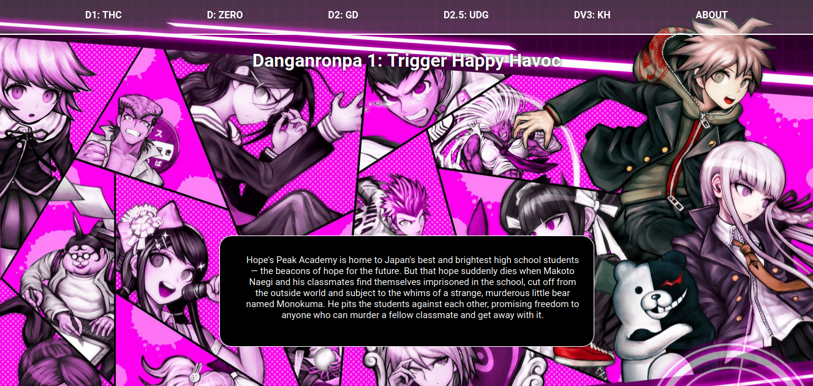
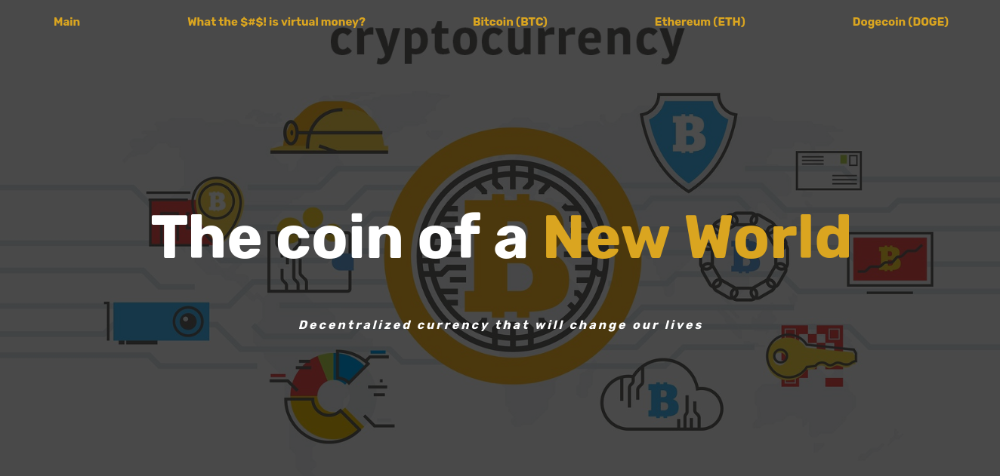
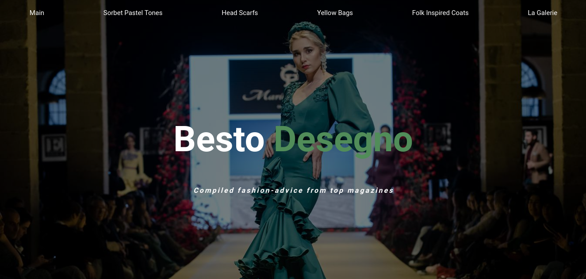

Studies
- URBE - Computer Science (2018-2022).
Work
- Freelance (early2019 - mid2020).
- Full-Stack Engineer (mid2020 - currently).
Skills
- Full-stack Web Development.
- Mobile and Software Development.
- Time management and organisational abilities.
- Fast learner of new and old principles or technologies.
- AGILE methodologies.
About me
Driven lifelong learner interested in distributed computing, machine learning, entrepreneurship and theoretical computer science. In my free time I like to read, play games/chess and learn new things.
URBE Web Design Projects
-
Website about Arknights, a mobile game.

-
Website about Danganronpa, a japanase tv-show.
 -
Website about Cryptocurrencies.
 -
Website about Fashion, to be more specific, fashion tips.
